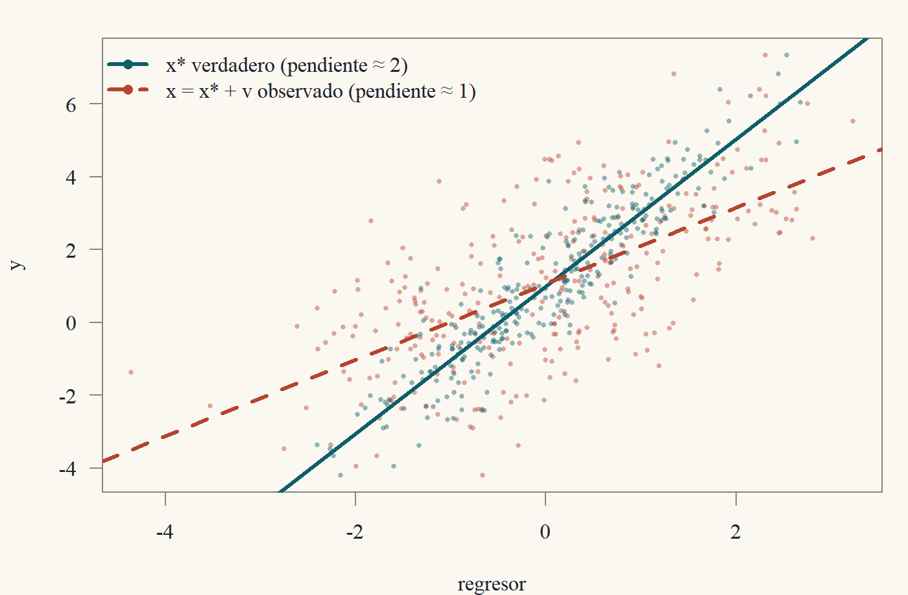

Clase 8 · Errores de especificación
Variables omitidas, variables irrelevantes, multicolinealidad y error de medida
1 El modelo que estimas no es el que querías
Hasta ahora supusimos que sabíamos qué regresores poner. En la vida real, la lista de regresores es una decisión, y se puede equivocar de cuatro formas:
- Omitir una variable que importa.
- Incluir una variable que no importa.
- Incluir variables que están muy correlacionadas entre sí.
- Medir mal una variable.
Esta clase estudia qué le pasa a MCO en cada caso. Spoiler: (1) y (4) producen sesgo, que no desaparece con más datos; (2) y (3) producen varianza, que sí desaparece con más datos. Casi todo el arte de la econometría aplicada consiste en preocuparse más de lo primero que de lo segundo.1
1 Una vez un colega me dijo: “la varianza es un problema de muestra; el sesgo es un problema de ideas”. Con más datos resuelves el primero. Con más datos, el segundo solo te da más confianza en la respuesta equivocada.
Usaremos la partición \(X = [X_1\;\;X_2]\) con \(X_1\) de \(n\times k_1\) (las variables que nos interesan) y \(X_2\) de \(n\times k_2\), y la notación \(M_2 = I - X_2(X_2'X_2)^{-1}X_2'\) de la Clase 3.
2 Omitir variables relevantes
Supongamos que el modelo verdadero es \[ y = X_1\beta_1 + X_2\beta_2 + u, \qquad \mathbb{E}[u\mid X] = 0, \] (es decir, RL1–RL3 con los dos bloques) pero el investigador regresa \(y\) solo sobre \(X_1\) y obtiene el estimador “corto” \[ \tilde\beta_1 = (X_1'X_1)^{-1}X_1'y. \]
Teorema 1 (Sesgo por variable omitida) Bajo RL1–RL3 para el modelo largo y \(\operatorname{rango}(X_1) = k_1\), \[ \mathbb{E}[\tilde\beta_1\mid X] = \beta_1 + \underbrace{(X_1'X_1)^{-1}X_1'X_2}_{=\,\hat\Pi}\;\beta_2, \] donde \(\hat\Pi\) (\(k_1\times k_2\)) es la matriz de coeficientes de MCO de regresar cada columna de \(X_2\) sobre \(X_1\).
Demostración. Sustituyendo el modelo verdadero, \[ \tilde\beta_1 = (X_1'X_1)^{-1}X_1'(X_1\beta_1 + X_2\beta_2 + u) = \beta_1 + (X_1'X_1)^{-1}X_1'X_2\beta_2 + (X_1'X_1)^{-1}X_1'u. \] Tomando esperanza condicional en \(X\) (que incluye a \(X_1\) y \(X_2\)), el último término tiene esperanza cero por RL3, y los dos primeros son funciones de \(X\).
El sesgo es \(\hat\Pi\beta_2\): el producto de dos cosas:
- \(\beta_2\): cuánto afecta la variable omitida a \(y\).
- \(\hat\Pi\): cuánto se relaciona la variable omitida con las incluidas.
El sesgo desaparece solo si una de las dos es cero: o la variable omitida no importa (\(\beta_2 = 0\)), o no está correlacionada en la muestra con las incluidas (\(X_1'X_2 = 0\), el caso del corolario de regresores ortogonales de la Clase 3).
2.1 El caso de un regresor
Con un regresor de interés \(x\), una constante y una variable omitida \(w\), el modelo verdadero es \(y = \alpha + \beta x + \gamma w + u\) y el sesgo del coeficiente de la regresión corta es \[ \mathbb{E}[\tilde\beta\mid X] - \beta = \gamma\,\hat\delta, \qquad \hat\delta = \frac{\sum_i(x_i - \bar x)(w_i - \bar w)}{\sum_i(x_i - \bar x)^2}, \] donde \(\hat\delta\) es la pendiente de regresar \(w\) sobre \(x\). Su signo sigue una tabla que vale la pena memorizar:
| \(\operatorname{Corr}(x,w)>0\) | \(\operatorname{Corr}(x,w)<0\) | |
|---|---|---|
| \(\gamma > 0\) | sesgo positivo | sesgo negativo |
| \(\gamma < 0\) | sesgo negativo | sesgo positivo |
Ejemplo 1 (El retorno a la educación y la habilidad) En \(\log(\text{salario}) = \alpha + \beta\,\text{educ} + \gamma\,\text{habilidad} + u\), la habilidad no se observa. Es razonable pensar que \(\gamma>0\) (la habilidad sube el salario) y que habilidad y educación están positivamente correlacionadas (a quien le va bien estudiando, estudia más). La tabla dice: el MCO corto sobreestima el retorno a la educación. Parte de lo que atribuimos a la educación es en realidad habilidad. Esta es probablemente la discusión más famosa de la economía laboral, y la motivación de la Clase 10.2
2 Lo curioso es que cuando se usan variables instrumentales (Clase 10), las estimaciones del retorno a la educación suelen salir mayores que las de MCO, no menores. Card (1999) discute por qué. Resulta que el sesgo por habilidad no es el único en juego: también hay error de medida en la educación, que sesga hacia abajo (lo vemos más adelante en esta clase).
2.2 Versión asintótica
Con muestreo i.i.d. (Clase 7), el sesgo no desaparece con \(n\). Si \(y_i = x_{1i}'\beta_1 + x_{2i}'\beta_2 + u_i\) con \(\mathbb{E}[x_iu_i] = 0\), entonces \[ \tilde\beta_1\xrightarrow{p}\beta_1 + \mathbb{E}[x_{1i}x_{1i}']^{-1}\mathbb{E}[x_{1i}x_{2i}']\,\beta_2 = \beta_1 + \Pi\beta_2, \] por la LGN y la función continua aplicadas a \(\tilde\beta_1 = \beta_1 + \hat Q_{11}^{-1}\hat Q_{12}\beta_2 + \hat Q_{11}^{-1}\frac1n\sum_i x_{1i}u_i\). El estimador corto es inconsistente para \(\beta_1\): converge, con toda seguridad, al número equivocado. (Lo que sí estima consistentemente es el coeficiente de la proyección corta, que es un objeto distinto; ver el Ejercicio 2.6.)
3 Incluir variables irrelevantes
Ahora el caso opuesto: el modelo verdadero es \(y = X_1\beta_1 + u\) (es decir, \(\beta_2 = 0\)), pero el investigador incluye \(X_2\) de todos modos. El estimador largo \(\hat\beta_1\) (el bloque de \(X_1\) en la regresión sobre \([X_1\;X_2]\)) sigue siendo insesgado: el modelo largo es correcto, solo que con \(\beta_2 = 0\). ¿Cuál es el costo? La varianza.
Teorema 2 (El precio de las variables irrelevantes) Supongamos RL1–RL4 para el modelo largo con \(\beta_2 = 0\), y \(X = [X_1\;X_2]\) de rango completo. Sean \(\tilde\beta_1\) (corto) y \(\hat\beta_1\) (largo). Ambos son insesgados y \[ \operatorname{Var}(\hat\beta_1\mid X) = \sigma^2(X_1'M_2X_1)^{-1}\;\succeq\;\sigma^2(X_1'X_1)^{-1} = \operatorname{Var}(\tilde\beta_1\mid X). \]
El insesgamiento del corto sale de Teorema 1 con \(\beta_2 = 0\). La varianza del largo sale de FWL (Clase 3): \(\hat\beta_1\) es MCO de \(M_2y\) sobre \(M_2X_1\), con matriz \((X_1'M_2X_1)^{-1}\). (También es el bloque \((1,1)\) de \((X'X)^{-1}\) por la inversa particionada de la Clase 1.) Para comparar varianzas necesito comparar las inversas de \(X_1'M_2X_1\) y \(X_1'X_1\). Primero comparo las matrices sin invertir: \(X_1'X_1 - X_1'M_2X_1 = X_1'P_2X_1\succeq0\). Y luego uso el resultado ★ de la Clase 1: “si \(A\succeq B\succ0\) entonces \(B^{-1}\succeq A^{-1}\)”.
Demostración. Insesgamiento. El corto es insesgado por Teorema 1 con \(\beta_2 = 0\); el largo, por la Clase 4.
Varianza del corto. Con \(\beta_2 = 0\), \(\tilde\beta_1 = \beta_1 + (X_1'X_1)^{-1}X_1'u\), y por RL4, \(\operatorname{Var}(\tilde\beta_1\mid X) = \sigma^2(X_1'X_1)^{-1}\).
Varianza del largo. Por FWL, \(\hat\beta_1 = (X_1'M_2X_1)^{-1}X_1'M_2y\). Como \(M_2X_2 = 0\) y \(\beta_2 = 0\), \(M_2y = M_2X_1\beta_1 + M_2u\), así que \(\hat\beta_1 = \beta_1 + (X_1'M_2X_1)^{-1}X_1'M_2u\) y \[ \operatorname{Var}(\hat\beta_1\mid X) = (X_1'M_2X_1)^{-1}X_1'M_2(\sigma^2I)M_2X_1(X_1'M_2X_1)^{-1} = \sigma^2(X_1'M_2X_1)^{-1}, \] usando \(M_2M_2 = M_2\).
Comparación. Sean \(A = X_1'X_1\) y \(B = X_1'M_2X_1\). Como \(I = P_2 + M_2\), \[ A - B = X_1'P_2X_1 = (P_2X_1)'(P_2X_1)\succeq0. \] Además \(B\succ0\) (en la demostración de FWL vimos que \(M_2X_1\) tiene rango columna completo). Luego \(A\succeq B\succ0\) y, por el orden de las inversas (Clase 1, sección ★), \(B^{-1}\succeq A^{-1}\). Multiplicando por \(\sigma^2>0\) se obtiene el resultado.
La diferencia es cero si y solo si \(P_2X_1 = 0\), es decir, si \(X_1\) y \(X_2\) son ortogonales. Incluir una variable irrelevante cuesta varianza en la medida en que esté correlacionada con las relevantes. Si no lo está, es gratis (salvo un grado de libertad en \(s^2\)).
3.1 El dilema sesgo–varianza
Juntando Teorema 1 y Teorema 2: si dudas de si incluir \(X_2\),
- Si la incluyes y era irrelevante: pagas varianza.
- Si la omites y era relevante: pagas sesgo.
Con una sola variable de interés, el error cuadrático medio del estimador corto es \(\text{ECM}(\tilde\beta_1) = \operatorname{Var}(\tilde\beta_1) + (\text{sesgo})^2\), y puede ser menor que el del largo si \(\beta_2\) es chico. Pero como el sesgo no desaparece con \(n\) y la varianza sí, en muestras grandes siempre gana incluir. Esto justifica la regla práctica de ser generoso con los controles, con una excepción importante: los malos controles, variables que son ellas mismas resultado del regresor de interés (Ejercicio 8.5).
4 Multicolinealidad
La multicolinealidad es el caso en que los regresores están muy correlacionados entre sí. Hay que distinguir dos versiones.
Perfecta: una columna de \(X\) es combinación lineal exacta de otras. Entonces \(\operatorname{rango}(X)<k\), \(X'X\) no es invertible (Clase 1) y MCO no está definido. Los coeficientes no están identificados: hay infinitos \(b\) que dan el mismo \(Xb\). La solución es eliminar la redundancia.
Imperfecta: las columnas son “casi” dependientes. MCO está definido y sigue siendo insesgado y MELI. El problema es solo de precisión. La fórmula de la Clase 4 lo dice todo: \[ \operatorname{Var}(\hat\beta_j\mid X) = \frac{\sigma^2}{\text{SCT}_j(1 - R_j^2)} = \frac{\sigma^2}{\text{SCT}_j}\cdot\underbrace{\frac{1}{1 - R_j^2}}_{\text{VIF}_j}. \] El factor de inflación de varianza \(\text{VIF}_j\) mide cuánto se multiplica la varianza de \(\hat\beta_j\) respecto del caso en que \(x_j\) no estuviera correlacionado con los demás regresores. Con \(R_j^2 = 0{,}9\), \(\text{VIF} = 10\); con \(R_j^2 = 0{,}99\), \(\text{VIF} = 100\) y los errores estándar se multiplican por \(10\).
Es tentador tratar la multicolinealidad como una “enfermedad” que hay que curar. No lo es. Todos los teoremas de las Clases 4, 5 y 7 siguen valiendo; los errores estándar grandes son correctos: reflejan que los datos no traen suficiente información para separar los efectos de \(x_j\) y de los regresores con que se mueve. Goldberger se burlaba de esta confusión llamándola “micronumerosidad”: el problema es tener pocos datos (o datos con poca variación independiente), y a nadie se le ocurre hacer tests para detectar la micronumerosidad.3 Las “soluciones” como eliminar un regresor correlacionado cambian la pregunta y, por Teorema 1, introducen sesgo.
3 El capítulo 23 de A Course in Econometrics de Goldberger (1991) es una parodia perfecta: toma cada frase de los libros sobre multicolinealidad y la reescribe cambiando “multicolinealidad” por “micronumerosidad”. “Los síntomas de la micronumerosidad incluyen errores estándar grandes…” Si tienes acceso al libro, léelo. Son dos páginas.
Un detalle interesante: la multicolinealidad afecta a los coeficientes individuales, pero no necesariamente a combinaciones de ellos. Si \(x_2\) y \(x_3\) son casi idénticos, \(\hat\beta_2\) y \(\hat\beta_3\) son muy imprecisos, pero \(\hat\beta_2 + \hat\beta_3\) puede estimarse con gran precisión (la covarianza entre \(\hat\beta_2\) y \(\hat\beta_3\) es muy negativa). Los datos saben el efecto conjunto; lo que no saben es cómo repartirlo.
5 Error de medida
5.1 En la variable dependiente
Si observamos \(y = y^* + v\) en lugar de \(y^*\), con \(v\) un error de medida con media cero no correlacionado con \(x\), entonces \(y = x'\beta + (u + v)\). El error compuesto \(u + v\) sigue cumpliendo \(\mathbb{E}[x(u + v)] = 0\), así que MCO sigue siendo consistente. El único costo es más varianza (\(\operatorname{Var}(u + v)>\operatorname{Var}(u)\) si \(u\) y \(v\) no están correlacionados). El error de medida en \(y\) es inocuo (salvo por precisión).
5.2 En un regresor: el sesgo de atenuación
El caso interesante es cuando el regresor está mal medido. Consideremos el modelo con un regresor: \[ y_i = \alpha + \beta x_i^* + u_i, \] pero no observamos \(x_i^*\) sino \(x_i = x_i^* + v_i\), donde \(v_i\) es el error de medida.
\((x_i^*, u_i, v_i)\) i.i.d., con \(\mathbb{E}[u_i] = \mathbb{E}[v_i] = 0\), \(\operatorname{Var}(x_i^*) = \sigma_*^2>0\), \(\operatorname{Var}(v_i) = \sigma_v^2\), y \(u_i\), \(v_i\), \(x_i^*\) mutuamente no correlacionados.
Teorema 3 (Sesgo de atenuación) Bajo los supuestos anteriores, la pendiente de MCO de \(y\) sobre \((1, x)\) satisface \[ \hat\beta\xrightarrow{p}\lambda\beta, \qquad \lambda = \frac{\sigma_*^2}{\sigma_*^2 + \sigma_v^2}\in(0, 1]. \]
Sustituyo \(x^* = x - v\) en el modelo: \(y = \alpha + \beta x + (u - \beta v)\). El nuevo “error” es \(u - \beta v\), y ahí está el problema: \(v\) está dentro de \(x\) y dentro del error. Así que el regresor está correlacionado con el error: \(\operatorname{Cov}(x, u - \beta v) = \operatorname{Cov}(x^* + v, u - \beta v) = -\beta\sigma_v^2\).
Para el límite, uso que la pendiente converge a \(\operatorname{Cov}(x,y)/\operatorname{Var}(x)\) (la pendiente de la proyección lineal, Clases 2 y 7). \(\operatorname{Cov}(x,y) = \operatorname{Cov}(x^* + v, \alpha + \beta x^* + u) = \beta\sigma_*^2\) y \(\operatorname{Var}(x) = \sigma_*^2 + \sigma_v^2\).
Demostración. La pendiente de MCO es \(\hat\beta = \widehat{\operatorname{Cov}}(x,y)/\widehat{\operatorname{Var}}(x)\) (Clase 3). Por la LGN y la función continua (como en la Clase 7), \(\hat\beta\xrightarrow{p}\operatorname{Cov}(x_i,y_i)/\operatorname{Var}(x_i)\), siempre que \(\operatorname{Var}(x_i)>0\). Calculamos, usando bilinealidad de la covarianza y los supuestos de no correlación: \[ \operatorname{Cov}(x_i,y_i) = \operatorname{Cov}(x_i^* + v_i,\;\alpha + \beta x_i^* + u_i) = \beta\operatorname{Var}(x_i^*) + \operatorname{Cov}(x_i^*,u_i) + \beta\operatorname{Cov}(v_i,x_i^*) + \operatorname{Cov}(v_i,u_i) = \beta\sigma_*^2, \] \[ \operatorname{Var}(x_i) = \operatorname{Var}(x_i^*) + \operatorname{Var}(v_i) + 2\operatorname{Cov}(x_i^*,v_i) = \sigma_*^2 + \sigma_v^2. \] Luego \(\hat\beta\xrightarrow{p}\beta\sigma_*^2/(\sigma_*^2 + \sigma_v^2) = \lambda\beta\).

El factor \(\lambda\) es la razón señal-ruido (o fiabilidad) de \(x\): la fracción de la varianza de \(x\) que es señal. Como \(0<\lambda\le1\), el estimador está sesgado hacia cero: tiene el signo correcto, pero es más chico en valor absoluto. Por eso se llama sesgo de atenuación. La intuición visual de la figura: el ruido esparce los puntos horizontalmente, y una nube más ancha con la misma variación vertical tiene una pendiente más plana.
Un comentario sobre el contraste con el error en \(y\): el error de medida es inocuo en \(y\) y dañino en \(x\) porque MCO trata asimétricamente a \(y\) y a \(x\). Minimiza distancias verticales; el ruido vertical se promedia, el horizontal no.
6 ★ Postgrado: atenuación con varios regresores y el test RESET
Con varios regresores, el error de medida en uno contamina a todos. Además, presentamos el test RESET de forma funcional como un test de Wald.
6.1 Error de medida en regresión múltiple
Supongamos \(y_i = \beta x_i^* + w_i'\gamma + u_i\), con \(w_i\) (que incluye la constante) bien medido y \(x_i = x_i^* + v_i\) con error de medida clásico (\(v_i\) no correlacionado con \(x_i^*\), \(w_i\), \(u_i\)). Por FWL, el coeficiente de \(x\) en la regresión de \(y\) sobre \((x, w)\) converge a \(\operatorname{Cov}(\tilde x_i, y_i)/\operatorname{Var}(\tilde x_i)\), donde \(\tilde x_i\) es el residuo de la proyección lineal de \(x_i\) sobre \(w_i\). Sea \(\tilde x_i^*\) el residuo de proyectar \(x_i^*\) sobre \(w_i\). Como \(v_i\) no está correlacionado con \(w_i\), la proyección de \(x_i = x_i^* + v_i\) sobre \(w_i\) es la de \(x_i^*\), y \(\tilde x_i = \tilde x_i^* + v_i\). Entonces \[ \hat\beta\xrightarrow{p}\beta\,\frac{\operatorname{Var}(\tilde x_i^*)}{\operatorname{Var}(\tilde x_i^*) + \sigma_v^2} = \beta\,\lambda_w, \qquad \lambda_w = \frac{\sigma_*^2(1 - \rho^2)}{\sigma_*^2(1 - \rho^2) + \sigma_v^2}\le\lambda, \] donde \(\rho^2\) es el \(R^2\) poblacional de proyectar \(x^*\) sobre \(w\). (Para el numerador: \(\operatorname{Cov}(\tilde x_i, y_i) = \operatorname{Cov}(\tilde x_i^* + v_i,\;\beta x_i^* + w_i'\gamma + u_i) = \beta\operatorname{Var}(\tilde x_i^*)\), porque \(\tilde x_i^*\) es ortogonal a \(w_i\) y \(\operatorname{Cov}(\tilde x_i^*, x_i^*) = \operatorname{Var}(\tilde x_i^*)\).) Dos lecciones:
- Agregar controles empeora la atenuación. Los controles se llevan parte de la señal de \(x^*\) (la parte predecible por \(w\)), pero nada del ruido. La razón señal-ruido del residuo es menor. Esto es especialmente grave en regresiones con efectos fijos (Econometría 2): al restar medias por individuo se elimina mucha señal y poco ruido.
- El sesgo se contagia. Los coeficientes de \(w\) también quedan sesgados: parte del efecto de \(x^*\) que \(x\) no logra capturar es absorbida por las variables de \(w\) correlacionadas con \(x^*\) (Ejercicio 8.7).
6.2 El test RESET
Si la CEF no es lineal, la regresión lineal es solo una aproximación (Clase 2). Ramsey (1969) propuso un test simple de mala especificación de forma funcional: agregar potencias de los valores ajustados y testear si importan. Se estima \[ y_i = x_i'\beta + \delta_1\hat y_i^2 + \delta_2\hat y_i^3 + \text{error} \] y se testea \(H_0:\delta_1 = \delta_2 = 0\) con un test \(F\) (o de Wald robusto, Clase 7). La lógica: si la CEF fuera \(x'\beta\), ninguna función no lineal de \(x\) debería ayudar a predecir \(y\) (por la descomposición de la CEF de la Clase 2, el error de la CEF no está correlacionado con ninguna función de \(x\)). El test tiene poder contra muchas alternativas, pero no dice cuál es la forma correcta: detecta el problema, no lo arregla.
7 Resumen
- Omitir \(X_2\) sesga \(\tilde\beta_1\) en \(\hat\Pi\beta_2\) (Teorema 1): el efecto de la omitida por su relación con las incluidas. El sesgo no desaparece con \(n\).
- Incluir \(X_2\) irrelevante no sesga, pero aumenta la varianza (Teorema 2), salvo si \(X_2\perp X_1\).
- Multicolinealidad imperfecta: varianza inflada por \(\text{VIF}_j = 1/(1 - R_j^2)\). No viola supuestos.
- Error de medida clásico en \(x\): \(\hat\beta\xrightarrow{p}\lambda\beta\) con \(\lambda = \sigma_*^2/(\sigma_*^2 + \sigma_v^2)\) (Teorema 3). En \(y\) es inocuo.
8 Ejercicios
Ejercicio 8.1. Modelo verdadero: \(y = \beta_0 + \beta_1x + \beta_2w + u\) con \(\beta_1 = 2\), \(\beta_2 = -3\). En la población, \(\operatorname{Var}(x) = 4\), \(\operatorname{Cov}(x,w) = 1\). ¿A qué converge la pendiente de la regresión de \(y\) sobre \((1,x)\)?
\(\delta = \operatorname{Cov}(x,w)/\operatorname{Var}(x) = 1/4\). Límite: \(\beta_1 + \beta_2\delta = 2 - 3/4 = 1{,}25\). Sesgo negativo, como predice la tabla (\(\beta_2<0\), correlación positiva).
Ejercicio 8.2. Demuestra que si \(x\) y \(w\) tienen correlación muestral cero, entonces el coeficiente de \(x\) es el mismo en la regresión de \(y\) sobre \((1,x)\) y sobre \((1,x,w)\), pero su error estándar puede cambiar. ¿En qué dirección, típicamente?
Por FWL con la constante, basta ver las variables en desvíos, que son ortogonales; por el corolario de regresores ortogonales (Clase 3), el coeficiente no cambia. El error estándar es \(s\sqrt{1/\text{SCT}_x}\) en ambos casos (pues \(R_x^2 = 0\)), pero \(s\) cambia: si \(w\) explica parte de \(y\), el \(s\) de la regresión larga es menor. Típicamente el error estándar baja: agregar un control no correlacionado con \(x\) pero que predice \(y\) mejora la precisión. (Es la lógica de agregar controles en experimentos aleatorios.)
Ejercicio 8.3. Con \(R_j^2 = 0{,}95\), ¿por cuánto se multiplican los errores estándar de \(\hat\beta_j\) respecto del caso sin correlación? ¿Cuántas veces más observaciones harían falta para compensarlo (suponiendo que \(\text{SCT}_j\) crece proporcionalmente a \(n\))?
\(\text{VIF} = 20\), los errores estándar se multiplican por \(\sqrt{20}\approx4{,}47\). Como la varianza es proporcional a \(1/n\), harían falta \(20\) veces más observaciones. Esa es la “micronumerosidad” de Goldberger en números.
Ejercicio 8.4. En el modelo de error de medida clásico, suponga que un estudio previo informa que la fiabilidad de la variable \(x\) es \(\lambda = 0{,}8\). Si la pendiente de MCO es \(0{,}4\), ¿cuál es una estimación consistente de \(\beta\)? ¿Qué pasa con el intercepto?
\(\hat\beta/\lambda = 0{,}5\). El intercepto converge a \(\mathbb{E}[y] - \lambda\beta\mathbb{E}[x] = \alpha + \beta\mu_* - \lambda\beta\mu_* = \alpha + (1 - \lambda)\beta\mu_*\): también está sesgado (salvo si \(\mu_* = 0\)), en dirección opuesta a la pendiente, porque la recta sigue pasando por las medias.
Ejercicio 8.5. (Malos controles.) Un programa de capacitación \(D\) (asignado al azar) sube el salario \(y\) en parte porque permite acceder a mejores ocupaciones \(O\). Explica por qué la regresión de \(y\) sobre \(D\) y \(O\) no estima el efecto total del programa, aunque \(O\) sea un predictor de \(y\).
\(O\) es un resultado de \(D\) (un “mediador”). Al controlar por \(O\), se compara a tratados y no tratados dentro de la misma ocupación, lo que elimina el canal ocupacional del efecto: el coeficiente de \(D\) estima, a lo más, un efecto “directo”. Peor aún, si la ocupación depende también de habilidades no observadas, condicionar en \(O\) rompe la aleatorización (quienes llegan a una buena ocupación sin el programa son distintos de quienes llegan con él) e introduce sesgo de selección. Angrist y Pischke (2009, sección 3.2.3) llaman a esto “bad control”.
Ejercicio 8.6 ★. Demuestra Teorema 2 sin usar el orden de las inversas, calculando directamente \(\operatorname{Var}(\hat\beta_1\mid X) - \operatorname{Var}(\tilde\beta_1\mid X)\) con Gauss–Markov.
Con \(\beta_2 = 0\), el modelo corto satisface RL1–RL4 con regresores \(X_1\). \(\hat\beta_1 = (X_1'M_2X_1)^{-1}X_1'M_2y\) es lineal en \(y\) y es insesgado para \(\beta_1\) en el modelo corto: \((X_1'M_2X_1)^{-1}X_1'M_2X_1 = I\). Por Gauss–Markov aplicado al modelo corto, su varianza es mayor o igual que la del MCO corto \(\tilde\beta_1\). ¡El teorema sale de Gauss–Markov en una línea!
Ejercicio 8.7 ★. En \(y = \beta x^* + \gamma w + u\) (variables con media cero, sin constante), con \(x = x^* + v\) y error de medida clásico, demuestra que el coeficiente de \(w\) en la regresión de \(y\) sobre \((x, w)\) converge a \(\gamma + \beta(1 - \lambda_w)\pi\), donde \(\pi = \operatorname{Cov}(x^*,w)/\operatorname{Var}(w)\).
Escribe \(y = \beta x + \gamma w + (u - \beta v)\). Los coeficientes límite \((b_x, b_w)\) resuelven \(\mathbb{E}[(x, w)'(y - b_xx - b_ww)] = 0\). Sabemos que \(b_x = \lambda_w\beta\). La ecuación de \(w\): \(\mathbb{E}[wy] = b_x\mathbb{E}[wx] + b_w\mathbb{E}[w^2]\). Con \(\mathbb{E}[wy] = \beta\mathbb{E}[wx^*] + \gamma\mathbb{E}[w^2]\) y \(\mathbb{E}[wx] = \mathbb{E}[wx^*]\): \(b_w\mathbb{E}[w^2] = \gamma\mathbb{E}[w^2] + \beta(1 - \lambda_w)\mathbb{E}[wx^*]\). Dividiendo, \(b_w = \gamma + \beta(1 - \lambda_w)\pi\). El coeficiente de \(w\) absorbe la parte del efecto de \(x^*\) que la \(x\) ruidosa no captura.